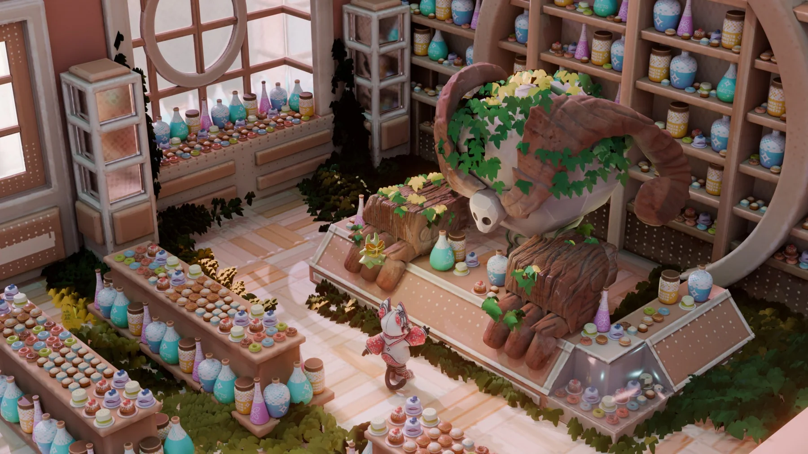
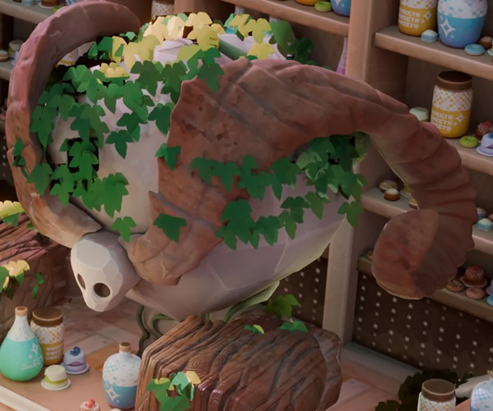
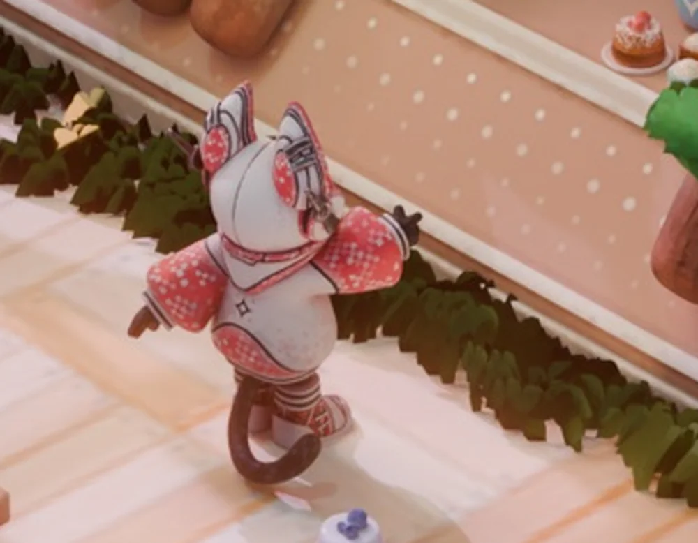
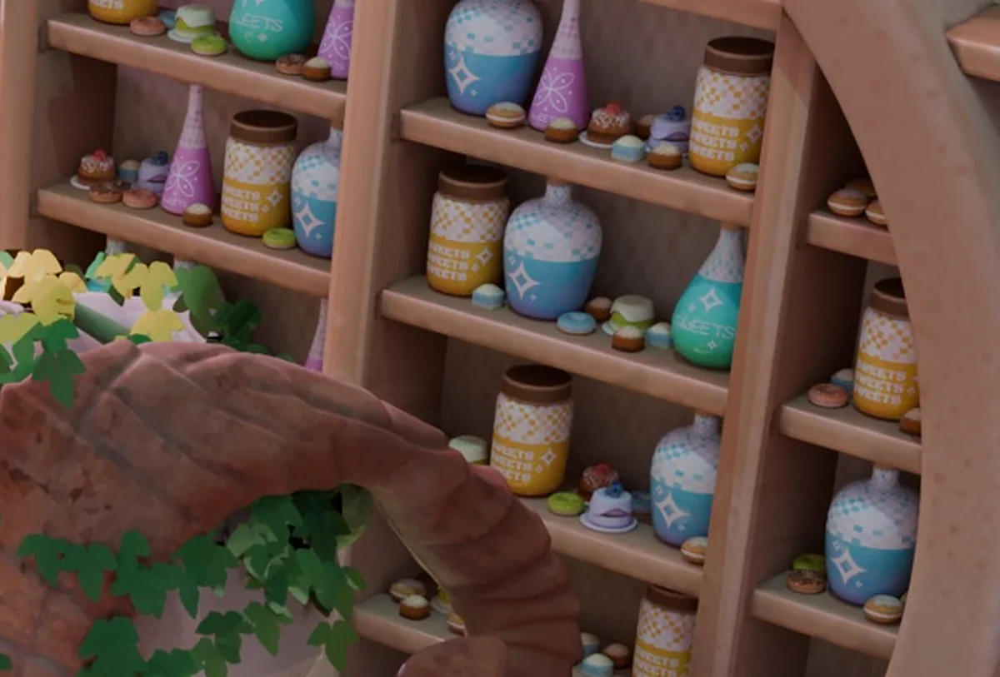
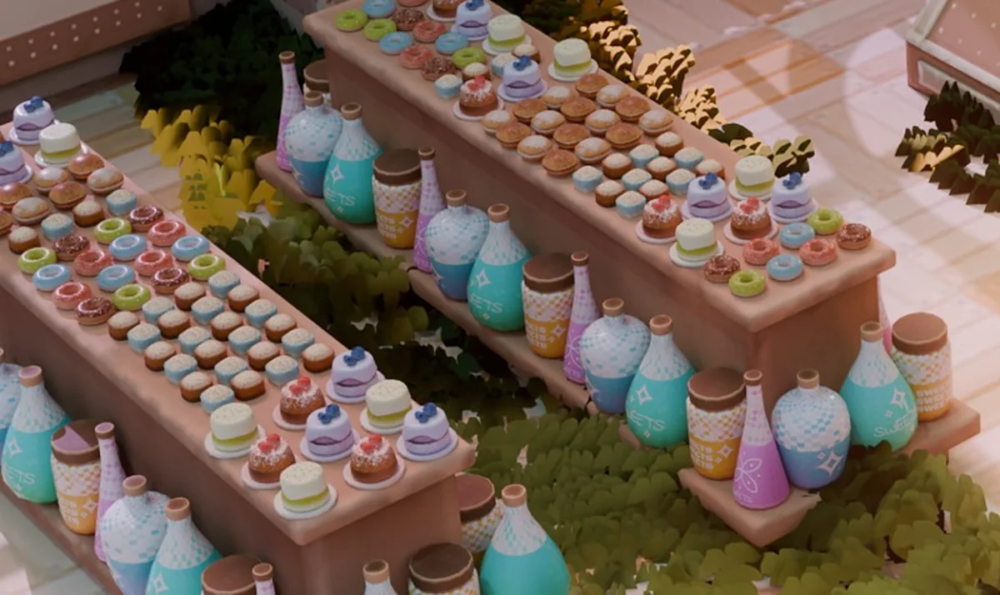
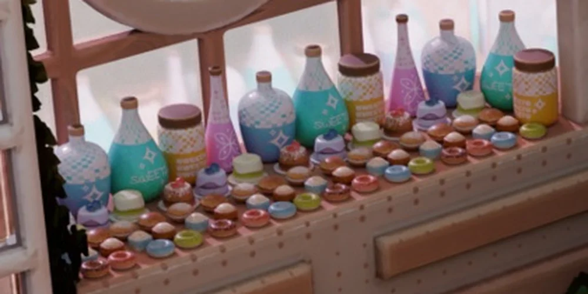
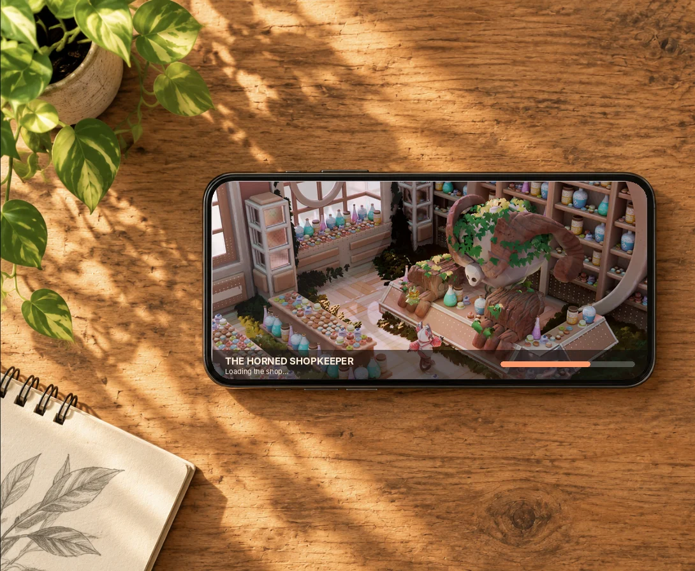

The Horned Shopkeeper
A cozy fantasy shop run by a giant horned creature overgrown with ivy. One story moment: a tiny visitor walks up to a counter that is far too big for him.Уютная фэнтези-лавка с огромным рогатым существом в плюще за прилавком. Один сюжетный момент: маленький посетитель подходит к слишком большому прилавку.
TaskЗадача
Build a story-driven stylized interior as one finished frame.Собрать сюжетный стилизованный интерьер как один законченный кадр.
My partМой вклад
- Scene and creatureСцена и существо
- Prop set and set dressingНабор пропсов и наполнение
- Lighting and renderСвет и рендер
DecisionsРешения
- Scale contrast tells the storyКонтраст масштабов рассказывает историю
- Warm wood base, teal and lilac accents tie dozens of props togetherТёплое дерево, бирюза и сирень связывают десятки пропсов
ResultРезультат
Final render 1920×1080, used here as a mobile loading screen mockup.Финальный рендер 1920×1080, здесь также как мокап экрана загрузки.

One glance, whole storyВся история с одного взгляда
A massive, sleepy shopkeeper and a small curious customer. Ivy over the creature says it has been there a long time.Огромный сонный хозяин и маленький любопытный покупатель. Плющ на существе говорит, что оно сидит здесь очень давно.


A shop full of thingsЛавка, полная вещей
Potion bottles, branded jars, macarons, counters and shelving share shapes and palette, so dozens of objects read as one set.Бутылки, банки с этикетками, макаруны, витрины и стеллажи делят формы и палитру, поэтому десятки предметов читаются как один набор.



As a loading screenКак экран загрузки
Presentation mockup. Photo background generated with AI (ChatGPT); the render inside is the original.Мокап. Фото-фон сгенерирован ИИ (ChatGPT); рендер внутри оригинальный.
